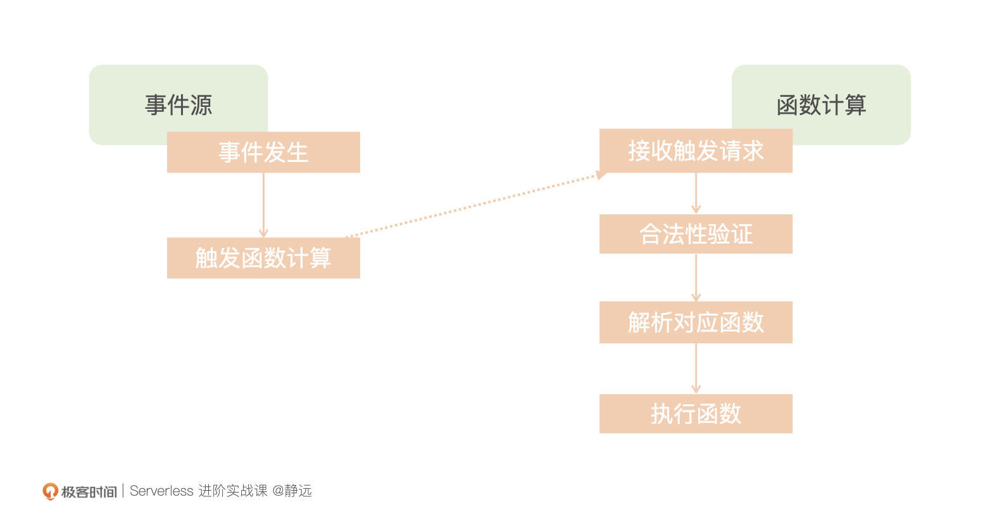
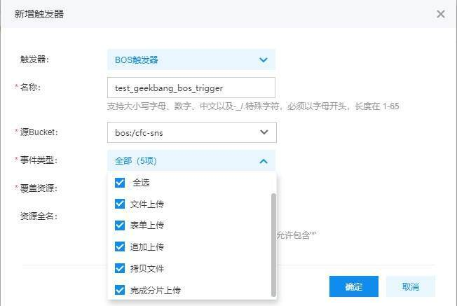
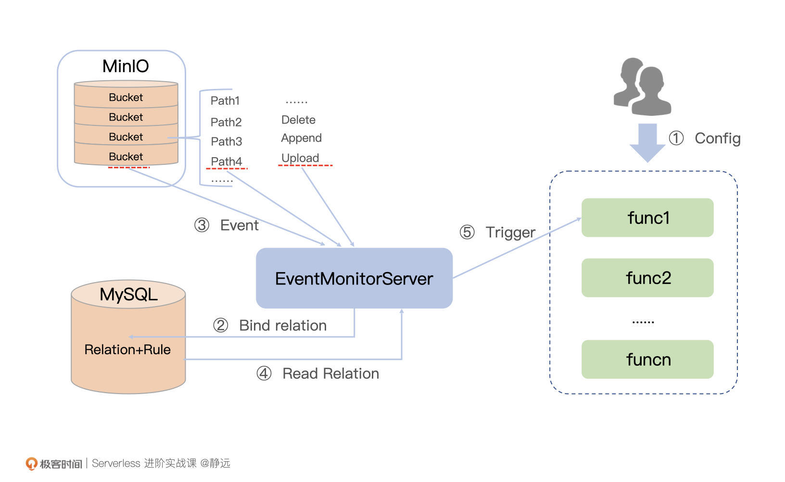
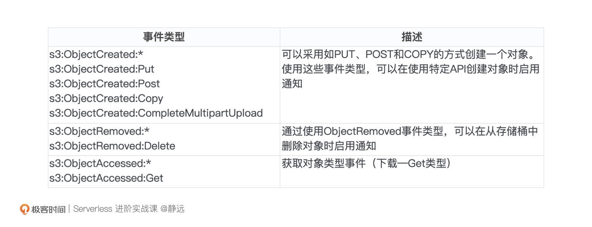
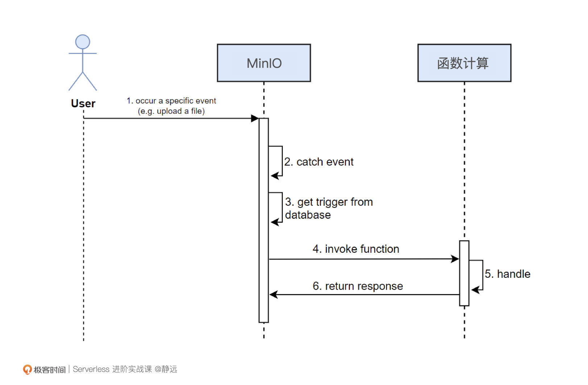

- 00 开篇词 Serverless是降本增效浪潮下的必然选择.md.html
- 00 思维构建 如何在新赛道下进阶Serverless能力？.md.html
- 01 生命周期：函数计算的基本流程是如何执行的？.md.html
- 02 触发器：如何构建事件源与函数计算的纽带？.md.html
- 03 高级属性：应对生产级别的应用，你需要掌握哪些技能？.md.html
- 04 冷启动：如何加快函数的第一次调用过程？.md.html
- 05 扩缩容：如何应对流量的波峰波谷？.md.html
- 06 流量转发：函数在不同情形下是如何执行的？.md.html
- 07 运行时（上）：不同语言形态下的函数在容器中是如何执行的？.md.html
- 08 运行时（下）：不同语言形态下的函数在容器中是如何执行的？.md.html
- 09 小试牛刀（一）：如何利用函数之间的调用解决业务问题？.md.html
- 10 小试牛刀（二）：如何突破VPC网络的速度限制？.md.html
- 11 WebIDE：如何让函数远离繁琐的本地开发模式？.md.html
- 12 编排：如何协调多任务的运行？.md.html
- 13 可观测（上）： 如何构建多维度视角下的Serverless监测体系？.md.html
- 14 可观测（下）： 如何构建多维度视角下的Serverless监测体系？.md.html
- 15 选型：不同阶段的数据应如何存储？.md.html
- 16 动手体验（一）：如何实现业务高效率地开发上线？.md.html
- 17 动手体验（二）：如何在云函数场景下实现一个有状态的服务？.md.html
- 18 实战指南：Serverless沙场老兵的一线使用经验.md.html
- 19 实战进阶（一）：Serverless “连接器” 的能力到底有多大？.md.html
- 20 实战进阶（二）：如何基于智能音箱开发一个BOT技能？.md.html
- 21 实战进阶（三）：传统的服务如何迁移到Serverless平台？.md.html
- 22 私有云：赛马时代的Serverless核心引擎谁能胜出？.md.html
- 23 实战进阶（四）：如何从0到1进阶一个开源引擎？.md.html
- 24 实战进阶（五）：如何从Serverless引擎蜕变成一个Serverless平台？.md.html
- 结束语 在实战中把握事物本质，不断革新.md.html
- 捐赠
02 触发器：如何构建事件源与函数计算的纽带？
你好，我是静远。
在上一节课里，我通过一个函数的开发和请求过程，给你介绍了函数计算的生命周期，让你从用户和平台两个视角，了解了函数计算各阶段的执行流程和基础要点。
细心的你应该能发现，上传到函数计算平台的云函数，一般是需要通过一个触发器来执行的，如果之前你没有接触过事件驱动模型和Serverless相关的知识，可能对触发器这个概念有一些陌生。
相信学完今天这节课的你，不仅能够了解触发器的概念和原理，更能对触发器相关的知识点，例如事件、调用等等都有一定的理解。最后，我也会带你实现一个自定义的触发器。
初识触发器
上节课，我们知道了函数托管在平台后一般需要有一个事件来触发才能真正地运行起来。那么在了解触发器之前，我们先了解一下事件。
什么是事件？
说得直白一点，事件，就是系统运行期间发生的动作或者发生的事情。而函数计算，提供了一种事件驱动的计算模型。针对这个概念，我们需要了解三件事。
第一，CNCF关于事件的定义和初衷。CloudEvents 期望通过一种通用的格式描述事件数据的规范，以提供跨服务、平台和系统的互操作性。那么，我们自身在开发一个函数计算平台的时候，就可以更多的以这个规范为准绳来设计；在选型一个开源框架、函数计算平台开发业务代码的时候，这个互操作性也可以作为技术选型的参考因素之一。
第二，国内云厂商的事件规范程度。目前各大第三方云厂商都希望推广落地CloudEvents规范，但在事件规范定义上，多多少少都有各自平台的一些特有属性和参数包含在里面。
如果你在其中一家云产品上开发了云函数，一般来说，需要做一些简单的适配才能迁移。庆幸的是，部分云厂商目前具备支持脚本迁移和适配的能力，你可以通过工单的形式跟他们取得联系，大大减少迁移成本。
第三，CNCF在哪些Serverless相关产品定义了规范。在函数计算中，会接触到单函数的事件触发、多个简单函数通过异步调用方式形成的事件触发、复杂场景下通过工作流（WorkFlow）的形式来进行编排的事件交互。
CNCF Serverless工作组针对函数和工作流均定义了相应的格式规范或原语。现在很多的传统企业、云厂商也都在尽量按照这个标准去执行——尤其是复杂的多函数交互的场景下。你在选型的时候可以关注一下是否兼容这个标准，便于函数和编排规则在各大平台迁移。
什么是触发器？
了解“事件”这个触发条件之后，我们再看函数运行起来之前的“触发”动作。我们通常把这种由事件驱动连接上下游服务的关系组合称为触发器，它是触发函数执行的主要方式之一。
我们知道，函数计算由云函数和触发器组成。对函数计算来说，触发器描述了一组关系和规则，包括事件源、目标函数、触发条件三大核心要素。

其中，事件源是事件的生产者，目标函数是事件的处理者。当触发条件满足时，就会通知函数计算引擎，调度对应的目标函数来执行。
触发器的元信息可以由服务方持久存储，也可以由函数托管平台和服务方共同持有。根据不同的集成和调用方式，触发器也有着不同的分类。
触发器类型
按照触发器集成原则，通常分为单向集成触发器、双向集成触发器和代理集成触发器。它们的区别在于事件源和事件的规则存储在哪里，以及从哪里触发。
我们在设计触发器的时候，主要考虑的是事件源和函数计算的上下游关系以及操作的便捷度。
例如，我们在云厂商看到的对象触发器，在存储对象和函数计算两个平台上都可以来创建和配置触发器，这种就是双向集成触发器。而对于消息的监听和触发场景，由于大部分情况是对异步消息的计算处理，加上函数计算按需启动执行的特性，我们通常就会设计成单向集成触发器，你直接在函数计算平台创建和配置触发器即可。
按照调用方式，我们又可以将触发器分为同步触发器和异步触发器。
同步调用：触发事件被函数计算处理后直接返回结果。例如，公有云厂商提供的HTTP触发器、CDN触发器等，基本都是同步触发器。
异步调用：触发事件请求函数计算后，函数计算服务返回一个接收成功的状态码，由函数计算来确保事件被可靠处理。例如，定时触发器、消息队列触发器等，均属于异步触发器。
在使用的时候，你也可以优先考虑自己的需求，从不同的分类里找到最适合的触发器类型。
到这里，相信你对触发器的认知已经不仅仅是基于上节课的一个感性轮廓了。下面，我们来体验一个简单的触发器，为自己动手实现触发器打下基础。
动手体验
我们以百度智能云的函数计算平台为底座来体验一下，假设我们已经创建了一个名叫test_geekbang的函数，接下来需要创建一个触发器。

如图，我们创建了一个BOS触发器（BOS是百度智能云的对象存储服务），并设置了监听的目标对象是BOS下的一个Bucket（bos:/cfc-sns），事件类型是文件上传、追加上传等条件均可触发函数的执行。
创建好触发器后，我们就可以在BOS上传一个文件来测试了。由于我们没有设定额外的过滤规则，所以你上传任何一个文件，均可以触发云函数test_geekbang一次执行。
整体操作没有什么难度，你也可以参考百度智能云函数计算CFC的教程去体验其他细节设置。你会发现，触发器使得函数计算与外部服务的连接非常的快捷高效。
说到这里，估计你已经迫不及待地想知道这个连接的背后是如何实现的了。接下来，让我们一起来动手实现一个触发器，体会其中的原理。
动手实现
我们看不到云厂商的对象存储触发器中详细的实现，那么通过一个比较类似，且功能实现全面的开源存储服务来作为实现触发器的底座，也未尝不可。
这里，我选择了和百度智能云BOS类似的开源对象存储服务MinIO来演示。MinIO采用Golang实现，客户端有支持丰富的语言集成，如Golang、Java、Python、JavaScript等等，空闲的时候，你也可以用不同的语言尝试重现这次的实验。
假设我们需要满足这样一个功能场景：
通过监听MinIO的事件动作（MinIO存储对象的创建、访问、删除）来触发函数计算的执行。例如：当一个文件存储到MInIO的Bucket中时，监听服务监测到该事件发生，通过查询判断是否存在一组关系和规则，如果存在，触发函数执行既定的业务逻辑。
那么，针对这个功能诉求，你能拆分出一个实现流程吗？别着急回答，可以先暂停一会儿思考一下。
我将大致流程分为了5个步骤：
- 用户在函数计算平台上对相关云函数绑定自定义触发器，设定好事件源标识；
- MinIO发生某个动作，假设是上传（Upload）文件的一个动作，该动作关联唯一的一个Bucket下的一条路径，构成了一次触发事件 （Event）；
- 事件监听器（Event Monitor Server）作为Deamon进程持续运行，会捕获到该事件；
- 监听器通过“动作+Bucket+路径”构成的唯一标识，从数据库MySQL查询并获取相应的触发器；
- 监听器对获取到的触发器进行逐个触发，对远端云函数进行触发调用。

接下来，我们就根据这个场景和流程来定义这个触发器。整体需要通过事件类型确定、事件协议定义、元数据存储约定、事件绑定四个步骤来完成。
事件类型确定
由于MinIO已经实现了事件监听的API，我们可以直接从MinIO API目前的事件类型中选出我们需要的三种，s3:ObjectCreated:* 、s3:ObjectRemoved:* 、s3:ObjectAccessed:* 满足针对一个对象的CRUD要求，并进行监听。

其中，第一种类型满足了通过不同方式来创建一个对象的需求；第二种事件类型，支持从存储的bucket中删除指定的对象；第三种事件类型是用来监听访问对象时才触发的情况。
选定好事件类型后，我们选取GitHub上封装好的MinIO客户端，简化我们的开发实现，通过引入mino-go，可以快速实现一个事件类型的监听动作。
func (m * EventMonitor) work() error {
miClient := m.miClient
for miInfo := range miClient.ListenNotification(context.Background(), "", "", []string{
"s3:ObjectCreated:*",
"s3:ObjectAccessed:*",
"s3:ObjectRemoved:*",
}){
//TODO：实现业务逻辑
}
}
事件协议定义
然后，我们就要定义事件协议，来传递MinIO和云函数之间的触发请求了。这里，我们采取HTTP+JSON的方式。你可以参考下面的事件格式定义方法：
{
"eventId" : "事件id ",
"source" : "事件源，此案例标识来源MiniIO",
"specversion": "协议的版本",
"type" : "事件类型 ",
"timestamp" : "请求时间戳",
"target": "函数唯一标识",
"data" : {
// 待处理数据
}
}
不过，定义了协议，能够传递请求还不够，函数计算平台通常为了能够识别可信的事件源，当有触发器创建之后，还需要进行授权认证，确保服务请求的安全性。- 接下来，我们来看一下接口设计。在这个案例情境下，我们需要创建四个功能来满足触发器的控制台操作需要，分别用于触发器的创建、修改、删除、查询，你也可以通过REST来构建如下的接口协议。
func OperateMinioTriggers(request *restful.Request, response *restful.Response)
其中，request中包括action动作用来标识CRUD操作即可。
这里你需要注意一点，如果一个函数被删除，那么它对应的附属特征、附属触发器等都应该剔除干净。这也是我们初次设计时候很容易遗漏的地方。
元数据存储约定
按照通常的操作习惯来说，在MinIO和函数计算服务侧均可实现触发器的集成功能，还可以在配置Bucket的时候创建事件绑定规则，在创建一个函数的时候也能够创建好监听对象的请求事件。
而这两处的绑定创建过程，除了UI界面和本身创建时的平台校验参数不一样外，都很雷同。为了降低第一次尝试的难度，我们就选择在MinIO服务侧集成。
由MinIO作为事件源服务方通知触发云函数的执行。那么，相应的关系信息只需要在MinIO服务侧存储，鉴权和规则在函数计算平台侧存储，其中：
- 关系创建：确定具体的触发关系，如具体的Bucket、触发条件等；
- 规则创建：确保触发源按照既定规则进行触发，如标识MiniIO的动作、触发形式等。
你可以根据上述的描述进行设计，这里，我也给出了简单的待存储对象的数据结构，你可以自行转换成数据库表来存储，通常多个关系可以共用一个规则。你可以就此创建两张表，一张规则表tb_rule，用于存储规则，一般存储在函数计算的平台侧，一张关系表tb_relation，依据触发器的类型存储在事件触发源侧。
规则：
type Rule struct {
ID uint
Sid string // 规则唯一ID
Resource string // 函数标识
Source string // 触发源
…… // 可以根据业务复杂度增加字段，如创建时间、用户ID等信息
}
关系：
type Relation struct{
RelationId string // 关系ID
RuleId string // 触发器关联的规则的id
Source string // 触发源，可以具体到bucketName
Target string // 函数的唯一标识
Condition string // 触发条件
…… // 可以根据业务复杂度增加字段，如触发器自定义参数
}
事件绑定
根据上述的约定设计方案，我们来完成事件的绑定规程，从MinIO服务侧来绑定，需要3个步骤。
步骤1：请求上述定义好的MinIO接口，创建一个自定义的触发器配置，例如监听一个对象存储到bucket的动作。
步骤2：MinIO侧的服务（例如API-Server）在接收到请求后，将关系存储在数据库中，并同步通知函数计算平台，创建对应的规则。
步骤3：函数计算平台接收到MinIO侧服务的请求后，检查当前库里面是否已经存在同样的规则，如果存在直接返回响应成功；如果不存在，记录规则，用于触发时校验，最后返回通知MinIO侧绑定成功。
到这里，我们已经完成了MinIO作为事件源，函数计算平台作为处理方的事件关系的绑定过程。
触发器的调用过程
定义好触发器并绑定关系后，我们可以以上传一个文件为例，整体看一下MinIO的事件触发过程，也就是触发器的调用过程：
- 用户操作MinIO，上传了一个文件；
- MinIO侧事件监听服务（EventMonitorServer）对触发的事件进行捕获；
- EventMonitorServer从数据库关系表（tb_relation）中获取匹配该事件的触发关系；
- 根据关系发起调用函数计算服务的请求；
- 函数计算服务平台侧接收到请求后，进行鉴权和规则的验证，并执行相应的函数进行处理，最后根据异步或者同步约定方式，进行结果返回。

到这里，我们已经定义好一个基于MInIO的对象存储触发器，并通过时序关系描述了调用时刻的交互过程。
如前所述，由于MinIO已经提供了相关的事件监听API，在本案例中，你只需要开发一个简单的服务，如事件监听服务EventMonitorServer，来监听这些API接口的变动即可。你可以按照此方法进一步实战演练。
如果需要上生产环境，你还需要根据性能、稳定性等相关的要求，增加缓存、重试机制等能力，来确保生产环境的SLA。
小结
今天，我给你介绍了事件源与函数计算的纽带——触发器，以及事件和触发器的相关知识，同时，也动手体验了云厂商的对象存储触发器。最后，我们也通过自己构建一个基于MinIO的对象存储触发器，深入了解了触发器的执行原理。
这其中，最重要的就是以MinIO为核心底座，来构建一个自定义的触发器，我希望你能够记住关于动手实现触发器的三点关键信息。
首先，我们选择MinIO来作为本次动手实现的初衷，是为了更好地了解云厂商关于对象存储的相关实现原理，在你之后遇到类似存储事件触发函数执行的时候，也可以用本节讲到的方法来去应对。
其次，触发器实现的来龙去脉，大致包含四个核心流程：事件类型确定、事件协议定义、元数据存储约定、事件绑定。
最后，今天我们引入的MinIO客户端，监听MinIO的三大事件类型，以及给出的代码示例，都可以即学即用，你也可以尝试快速上手实战，实现一个触发器。
希望通过以上的介绍，你能对触发器以及相关的事件、调用原理有一个比较深入的理解，在之后使用或者自定义触发器的时候，就可以“拿捏”得比较准了。
思考题
好了，这节课到这里也就结束了，最后我给你留了一个思考题。
在你的工作场景中，还发现哪些场景可以构造成触发器？改造过程中，我们通常需要注意哪些技术卡点？
欢迎在留言区写下你的思考和答案，我们一起交流讨论。感谢你的阅读，也欢迎你把这节课分享给更多的朋友一起交流进步。
延伸阅读
- CloudEvents规范 你可以通过这个链接来了解CNCF事件的定义和详解
- Minio-go 这是我案例中使用的访问minio的一个封装库，供你参考
- Minio支持的事件类型介绍 这是MinIO官方的事件支持书册，感兴趣的话，可以了解一下
- Serverless Workflow Specification 这个是关于工作流规范的描述，在构建函数和应用编排的时候，可以提前参考一下
© 2019 - 2023 Liangliang Lee. Powered by gin and hexo-theme-book.